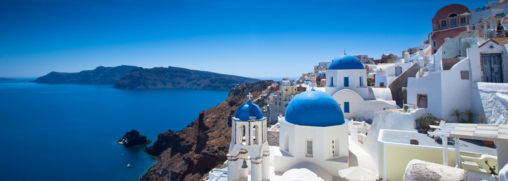

SANTORINI
Isla famosa por sus casas blancas y atardeceres espectaculares.

ATENAS
Cuna de la civilización occidental, con monumentos icónicos como el Partenón y el Ágora Antigua.

METEORA
Conocido por sus monasterios suspendidos sobre formaciones rocosas impresionantes.